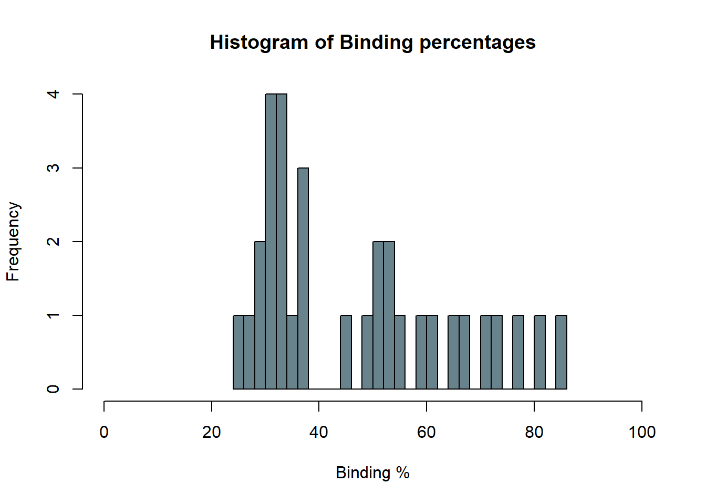
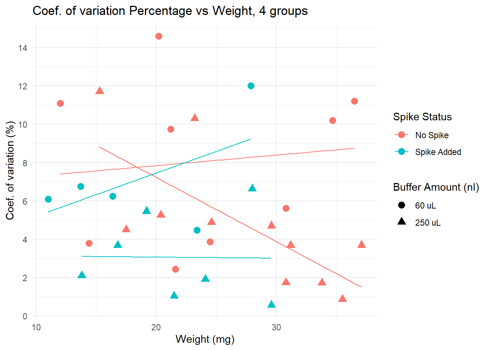
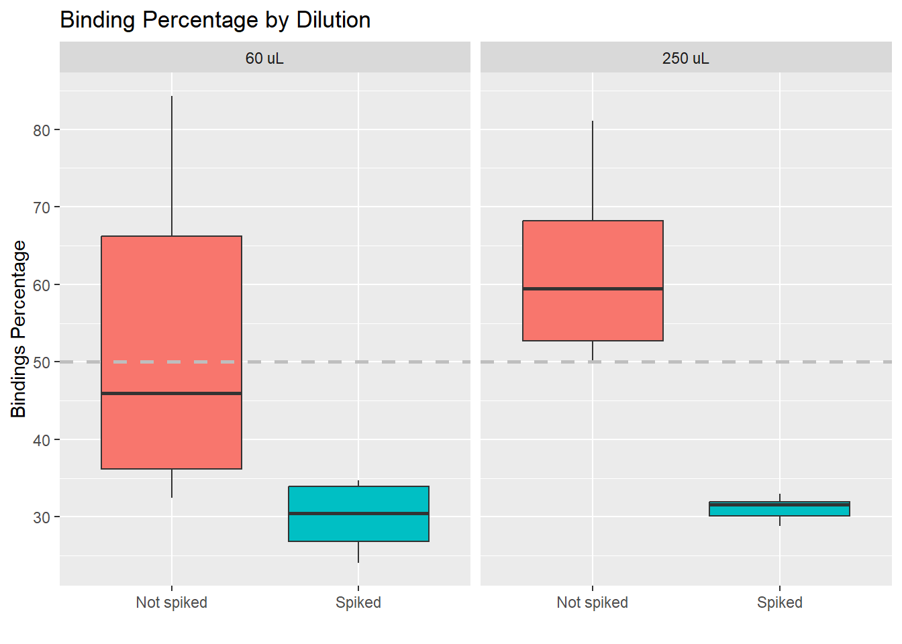
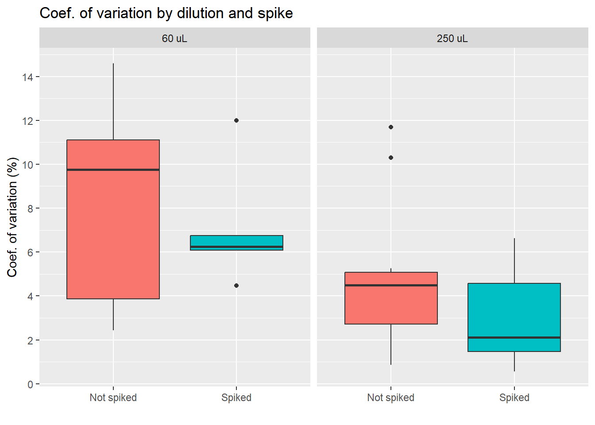
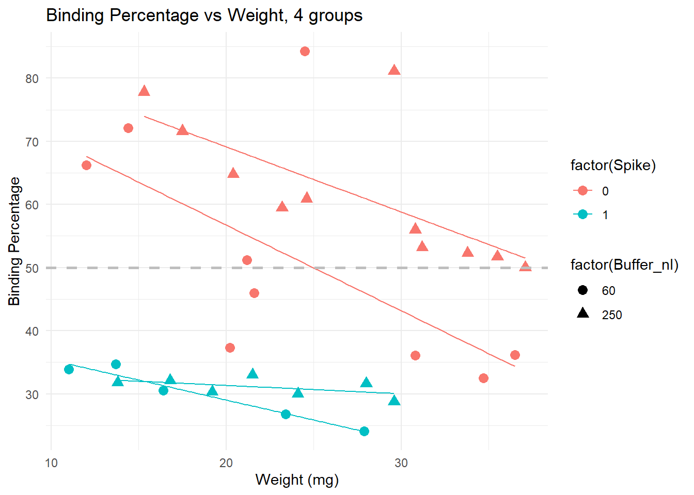
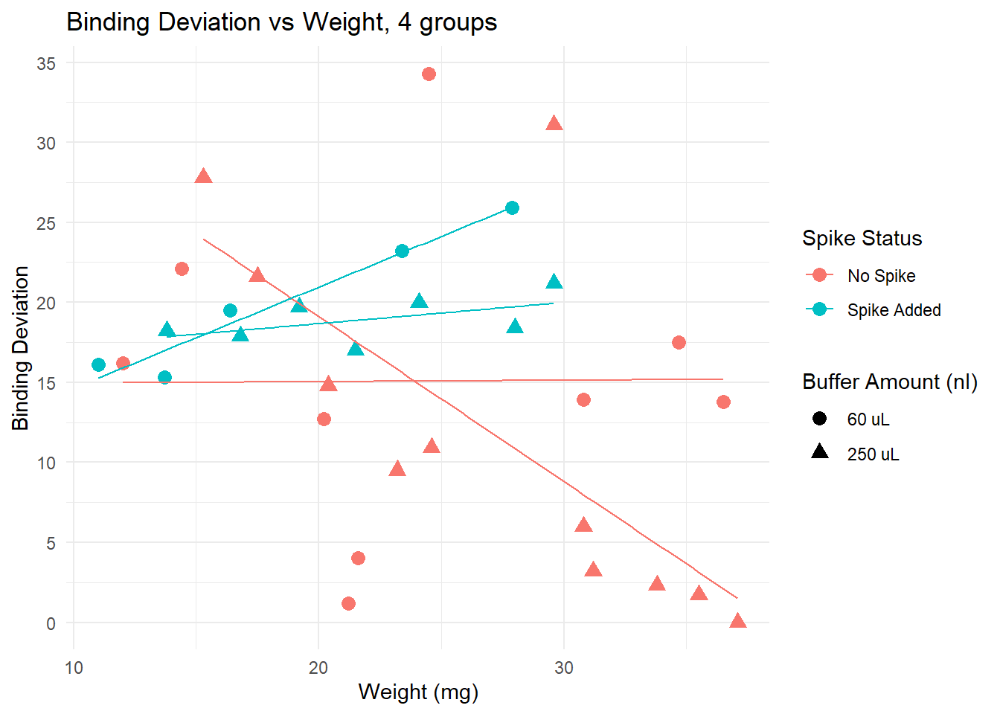
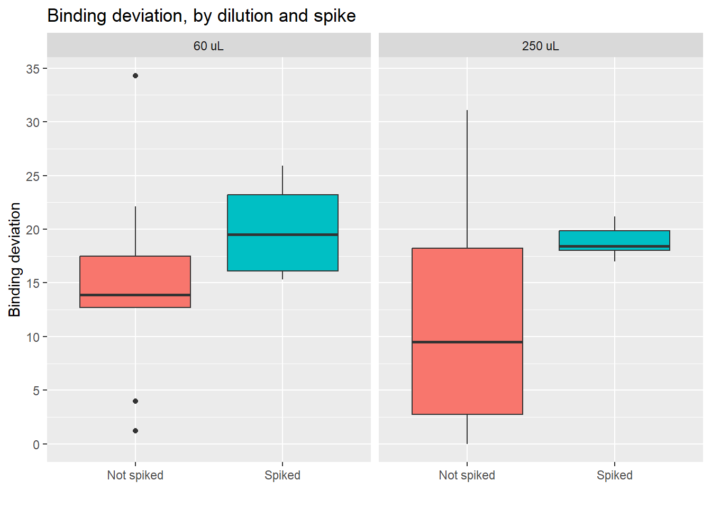
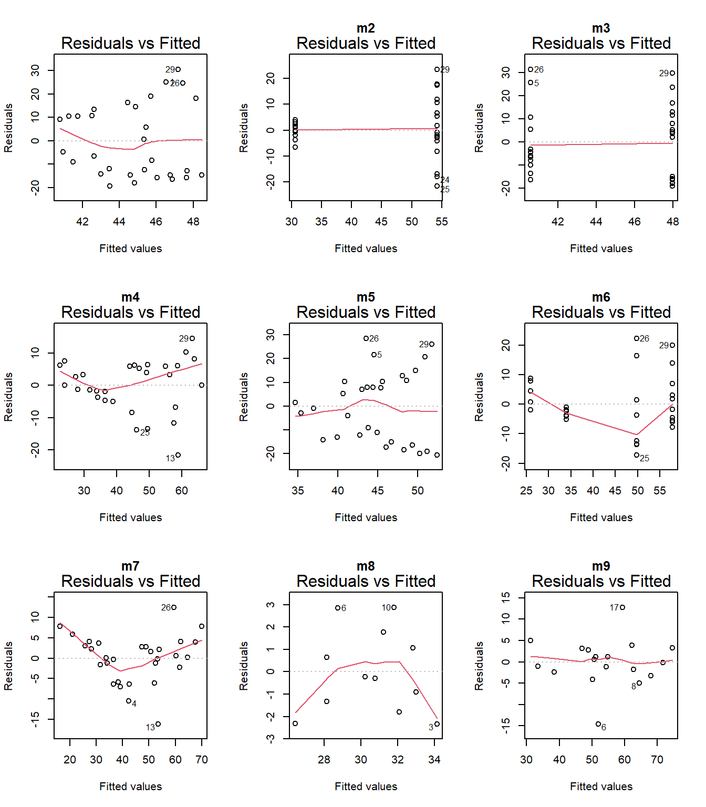
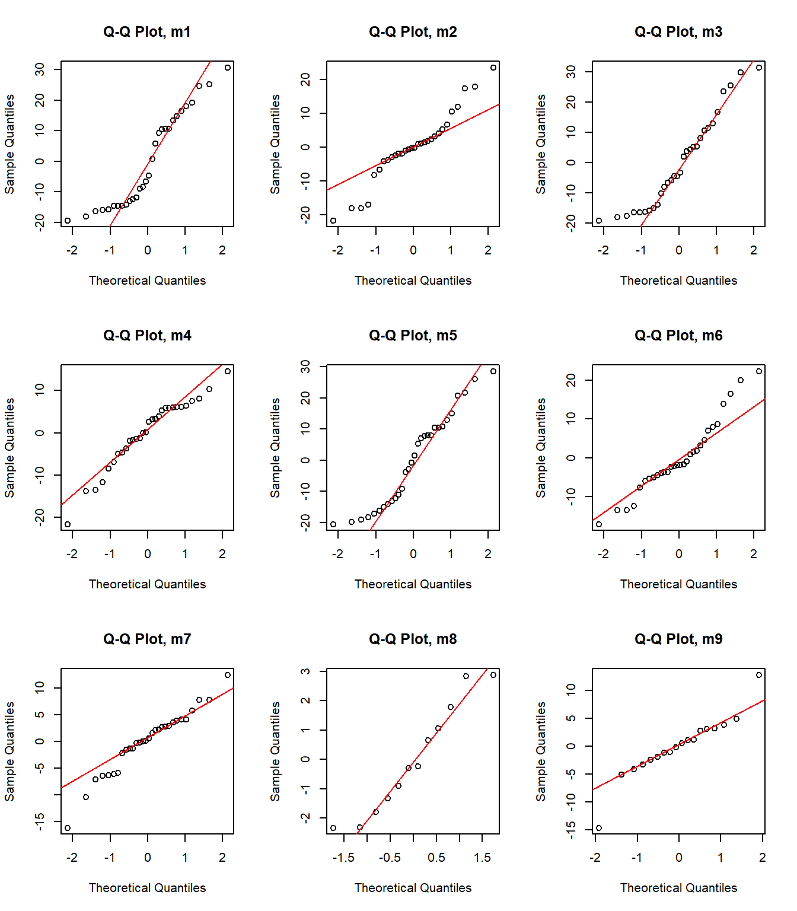

ELISA_Visualizations
Paloma
2024-10-16
Last updated: 2024-11-11
Checks: 6 1
Knit directory:
HairCort-Evaluation-Nist2020/
This reproducible R Markdown analysis was created with workflowr (version 1.7.0). The Checks tab describes the reproducibility checks that were applied when the results were created. The Past versions tab lists the development history.
The R Markdown file has unstaged changes. To know which version of
the R Markdown file created these results, you’ll want to first commit
it to the Git repo. If you’re still working on the analysis, you can
ignore this warning. When you’re finished, you can run
wflow_publish to commit the R Markdown file and build the
HTML.
Great job! The global environment was empty. Objects defined in the global environment can affect the analysis in your R Markdown file in unknown ways. For reproduciblity it’s best to always run the code in an empty environment.
The command set.seed(20241016) was run prior to running
the code in the R Markdown file. Setting a seed ensures that any results
that rely on randomness, e.g. subsampling or permutations, are
reproducible.
Great job! Recording the operating system, R version, and package versions is critical for reproducibility.
Nice! There were no cached chunks for this analysis, so you can be confident that you successfully produced the results during this run.
Great job! Using relative paths to the files within your workflowr project makes it easier to run your code on other machines.
Great! You are using Git for version control. Tracking code development and connecting the code version to the results is critical for reproducibility.
The results in this page were generated with repository version f033eb8. See the Past versions tab to see a history of the changes made to the R Markdown and HTML files.
Note that you need to be careful to ensure that all relevant files for
the analysis have been committed to Git prior to generating the results
(you can use wflow_publish or
wflow_git_commit). workflowr only checks the R Markdown
file, but you know if there are other scripts or data files that it
depends on. Below is the status of the Git repository when the results
were generated:
Ignored files:
Ignored: .DS_Store
Untracked files:
Untracked: data/Data_cort_values.csv
Unstaged changes:
Modified: analysis/ELISA_computation.Rmd
Modified: analysis/ELISA_visualizations.Rmd
Modified: analysis/index.Rmd
Note that any generated files, e.g. HTML, png, CSS, etc., are not included in this status report because it is ok for generated content to have uncommitted changes.
These are the previous versions of the repository in which changes were
made to the R Markdown (analysis/ELISA_visualizations.Rmd)
and HTML (docs/ELISA_visualizations.html) files. If you’ve
configured a remote Git repository (see ?wflow_git_remote),
click on the hyperlinks in the table below to view the files as they
were in that past version.
| File | Version | Author | Date | Message |
|---|---|---|---|---|
| html | 0f92d74 | Paloma | 2024-10-22 | Build site. |
| Rmd | dc9bc1f | Paloma | 2024-10-22 | wflow_publish("./analysis/ELISA_visualizations.Rmd") |
| html | 7801ea9 | Paloma | 2024-10-18 | Build site. |
| Rmd | a327e87 | Paloma | 2024-10-18 | wflow_publish("./analysis/ELISA_visualizations.Rmd") |
| Rmd | a59d14d | Paloma | 2024-10-18 | visualizations-updated |
| html | a59d14d | Paloma | 2024-10-18 | visualizations-updated |
| html | 8e3a655 | Paloma | 2024-10-17 | update plots |
| Rmd | de44ed6 | Paloma | 2024-10-17 | wflow_publish("./analysis/ELISA_visualizations.Rmd") |
| html | 98024d2 | Paloma | 2024-10-16 | Build site. |
| Rmd | 1953f30 | Paloma | 2024-10-16 | wflow_publish("./analysis/ELISA_visualizations.Rmd") |
| html | b08a78b | Paloma | 2024-10-16 | Build site. |
| Rmd | 0d06b46 | Paloma | 2024-10-16 | wflow_publish("./analysis/ELISA_visualizations.Rmd") |
| Rmd | b03e143 | Paloma | 2024-10-16 | creating plots |
| html | b03e143 | Paloma | 2024-10-16 | creating plots |
| Rmd | 2cbdcc9 | Paloma | 2024-10-16 | merged data, cleaned, visualized some results |
| html | 2cbdcc9 | Paloma | 2024-10-16 | merged data, cleaned, visualized some results |
Introduction
Here I use QCed results from an ELISA plate. All hair samples were obtained from the same person. I tested 3 variables:
dilution (60 nL vs 250 nL, coded as 0 and 1, respectively)
weight (11 to 37.1 mg)
spike (25 nL stock solution (1:10) added to some wells, coded as 0 and 1, meaning not-spiked and spiked)
I removed the samples that have a Coef of variation higher than 15%.
Summary of results
The figures below were used to decide that the optimal parameters are:
- Weight higher than 20, ideally. Binding deviation goes down with higher weight.
- Dilution between 60 and 250 ul (higher dilution provides lower coef. of variation, more lower dilutions locate samples closer to 50% binding. An intermedieate value would be best)
- Spike Non-spiked samples provide lower binding deviation from 50% (i.e. measures are close to falling outside the curve)

| Version | Author | Date |
|---|---|---|
| 0f92d74 | Paloma | 2024-10-22 |
Here we see the effect of the spike more clearly: adding a spike may not be necessary unless we have very small samples.
Spiked samples were removed due to inconsistent results.

| Version | Author | Date |
|---|---|---|
| 0f92d74 | Paloma | 2024-10-22 |
Results

The following plots were made considering that having a binding of 50% is ideal. Data points that are over 80% or under 20% are not within the curve, and predictions are less accurate.
Binding percentages
Binding percentage by different variables

| Version | Author | Date |
|---|---|---|
| 0f92d74 | Paloma | 2024-10-22 |
Spiked samples (turquoise) have lower binding, because they have higher levels of cortisol than non spiked (pink) samples.
Dilution: effect is less clear. We see samples with both 60 uL and 250 uL binding at very high and very low levels.
Trends: within non-spiked samples with a similar weight and diluted at 60uL (pink circles), we do not obtain consistent binding percentages. However, non-spiked samples with similar weights do obtain similar bindings, and the lines are in the expected direction (higher weight, lower binding), except by a few outliers that would be removed from the analysis anyway (for having binding over 80%)
Conclusion: samples across different weights, non-spiked, and diluted in 250 uL buffer seem to provide the best results, particularly if samples weigh more than 15 mg. Using less than that may be risky, and in those cases, it may be better to use less buffer to concentrate the samples a bit more.
Value distributions by group (boxplots)

| Version | Author | Date |
|---|---|---|
| 0f92d74 | Paloma | 2024-10-22 |
Here we also see that the impact of the spike on the values is larger than the impact of using a different dilution
Coef. of variation percentage
The coefficient of variation or CV is a standardized measure of the difference between duplicates (same sample, same weight, same dilution, same everything). Some variables may make duplicates more variable, so this is what will be tested below.
Coef. of variation by group

| Version | Author | Date |
|---|---|---|
| 0f92d74 | Paloma | 2024-10-22 |
Conclusion diluting the sample less seems to lead to higher differences between duplicates, which is something we want to avoid. We also see less variation for the group of spiked samples, with the lowest average of the four groups. Yet, we also must note that the spiked, 250 uL group has only 6 samples, as we see on the table below.
| Dilution: | No spike | Spiked |
|---|---|---|
| 60 uL | 7 | 7 |
| 250 uL | 12 | 6 |
| Total: 32 samples | ||
Coef. of variation by different variables

Lower CV is seen in spiked + 250 uL group, particularly for samples with low weight. Yet, non spiked, diluted in 250uL samples have very low CV if weight is over 30.
Deviation from 50% binding
Here I calculate a “binding” deviation score, to have a better idea of the “distance” between the values obtained and what I should aim for: 50% binding. Here an example of how this score works:
| Sample | Binding.Perc | Binding_deviation | |
|---|---|---|---|
| 22 | 32 | 50.0 | 0.0 |
| 21 | 31 | 51.2 | 1.2 |
| 24 | 34 | 51.7 | 1.7 |
| 23 | 33 | 52.3 | 2.3 |
| 25 | 36 | 53.2 | 3.2 |
| 15 | 27 | 46.0 | 4.0 |

| Version | Author | Date |
|---|---|---|
| 0f92d74 | Paloma | 2024-10-22 |
This plot suggests that for samples of weight lower than 20 mg, adding a spike lowers the binding deviation. This effect is lost if samples are heaver than 20 mg.

| Version | Author | Date |
|---|---|---|
| 0f92d74 | Paloma | 2024-10-22 |
We observe that spiked samples have a higher deviation from the ideal binding. We also observe that having larger samples leads to values closer to 50%. It is interesting to see that error does not go below 15% if we look at samples with weight under 20mg. Yet, we know that a deviation of up to 30% is acceptable.

| Version | Author | Date |
|---|---|---|
| 0f92d74 | Paloma | 2024-10-22 |
Here we see how the lowest (best) scores are obtained by the non-spiked groups. Even better results are obtained if the dilution is 250 uL.
- Conclusion: using a 250 uL dilution, without spikes, will lead to better results that fall in the middle of the curve, and allow for more precise calculations of cortisol concentration.
Analysis: linear models
To explore the effects of each variable more systematically, I run multiple models and compared them using AIC Akakikes’ coefficient. I removed samples with a binding over 80% or under 20%.

| Version | Author | Date |
|---|---|---|
| 0f92d74 | Paloma | 2024-10-22 |
First, I looked at the distribution of the data (binding percentage). I am not sure how to describe it, but it does not look very linear. I will test different distributions at another time, but for now, I will run and compare simple models that should allow me to understand which variables have a greater impact on binding percentages.
Comparing models
# creating function to extract coeffs
extract_coefs <- function(model, model_name) {
# Extract summary of the model
coef_summary <- summary(model)$coefficients
# Create a data frame with term names, estimates, and standard errors
coef_df <- data.frame(
term = rownames(coef_summary),
estimate = coef_summary[, "Estimate"],
std.error = coef_summary[, "Std. Error"],
model = model_name # Add the model name as a new column
)
# Return the data frame
return(coef_df)
}binding <- data$Binding.Perc
weight <- data$Weight_mg
spike <- data$Spike
buffer <- data$Buffer_nl
# model 1
m1 <- lm(binding ~ weight)
summary(m1)
Call:
lm(formula = binding ~ weight)
Residuals:
Min 1Q Median 3Q Max
-19.39 -14.46 -5.65 12.69 30.62
Coefficients:
Estimate Std. Error t value Pr(>|t|)
(Intercept) 51.6739 9.2460 5.589 5.56e-06 ***
weight -0.2934 0.3732 -0.786 0.438
---
Signif. codes: 0 '***' 0.001 '**' 0.01 '*' 0.05 '.' 0.1 ' ' 1
Residual standard error: 15.77 on 28 degrees of freedom
Multiple R-squared: 0.0216, Adjusted R-squared: -0.01335
F-statistic: 0.618 on 1 and 28 DF, p-value: 0.4384confint(m1, level = 0.95) 2.5 % 97.5 %
(Intercept) 32.734311 70.6134504
weight -1.057979 0.4711297# model 2
m2 <- lm(binding ~ spike)
summary(m2)
Call:
lm(formula = binding ~ spike)
Residuals:
Min 1Q Median 3Q Max
-21.6889 -3.6222 -0.2333 3.8667 23.6111
Coefficients:
Estimate Std. Error t value Pr(>|t|)
(Intercept) 54.189 2.490 21.765 < 2e-16 ***
spike1 -23.556 3.937 -5.984 1.91e-06 ***
---
Signif. codes: 0 '***' 0.001 '**' 0.01 '*' 0.05 '.' 0.1 ' ' 1
Residual standard error: 10.56 on 28 degrees of freedom
Multiple R-squared: 0.5612, Adjusted R-squared: 0.5455
F-statistic: 35.81 on 1 and 28 DF, p-value: 1.912e-06confint(m2, level = 0.95) 2.5 % 97.5 %
(Intercept) 49.08898 59.28880
spike1 -31.61922 -15.49189# model 3
m3 <- lm(binding ~ buffer)
summary(m3)
Call:
lm(formula = binding ~ buffer)
Residuals:
Min 1Q Median 3Q Max
-19.165 -14.670 -3.835 9.970 31.515
Coefficients:
Estimate Std. Error t value Pr(>|t|)
(Intercept) 40.585 4.296 9.447 3.33e-10 ***
buffer1 7.380 5.707 1.293 0.207
---
Signif. codes: 0 '***' 0.001 '**' 0.01 '*' 0.05 '.' 0.1 ' ' 1
Residual standard error: 15.49 on 28 degrees of freedom
Multiple R-squared: 0.05636, Adjusted R-squared: 0.02266
F-statistic: 1.672 on 1 and 28 DF, p-value: 0.2065confint(m3, level = 0.95) 2.5 % 97.5 %
(Intercept) 31.784638 49.38459
buffer1 -4.309996 19.07018# model 4
m4 <- lm(binding ~ weight + spike)
summary(m4)
Call:
lm(formula = binding ~ weight + spike)
Residuals:
Min 1Q Median 3Q Max
-21.621 -4.416 1.329 6.013 14.585
Coefficients:
Estimate Std. Error t value Pr(>|t|)
(Intercept) 76.6215 5.7290 13.374 2.00e-13 ***
weight -0.8763 0.2100 -4.172 0.00028 ***
spike1 -28.0684 3.3078 -8.485 4.25e-09 ***
---
Signif. codes: 0 '***' 0.001 '**' 0.01 '*' 0.05 '.' 0.1 ' ' 1
Residual standard error: 8.388 on 27 degrees of freedom
Multiple R-squared: 0.7332, Adjusted R-squared: 0.7134
F-statistic: 37.09 on 2 and 27 DF, p-value: 1.795e-08confint(m4, level = 0.95) 2.5 % 97.5 %
(Intercept) 64.866499 88.3764142
weight -1.307243 -0.4453015
spike1 -34.855427 -21.2812872# model 5
m5 <- lm(binding ~ weight + buffer)
summary(m5)
Call:
lm(formula = binding ~ weight + buffer)
Residuals:
Min 1Q Median 3Q Max
-20.5867 -13.8305 0.2964 10.4043 28.5410
Coefficients:
Estimate Std. Error t value Pr(>|t|)
(Intercept) 49.3231 9.1936 5.365 1.14e-05 ***
weight -0.4003 0.3726 -1.074 0.292
buffer1 8.5875 5.8012 1.480 0.150
---
Signif. codes: 0 '***' 0.001 '**' 0.01 '*' 0.05 '.' 0.1 ' ' 1
Residual standard error: 15.45 on 27 degrees of freedom
Multiple R-squared: 0.09504, Adjusted R-squared: 0.02801
F-statistic: 1.418 on 2 and 27 DF, p-value: 0.2597confint(m5, level = 0.95) 2.5 % 97.5 %
(Intercept) 30.459445 68.1867374
weight -1.164810 0.3642451
buffer1 -3.315599 20.4905160# model 6
m6 <- lm(binding ~ spike + buffer)
summary(m6)
Call:
lm(formula = binding ~ spike + buffer)
Residuals:
Min 1Q Median 3Q Max
-17.230 -5.022 -1.865 4.197 22.370
Coefficients:
Estimate Std. Error t value Pr(>|t|)
(Intercept) 49.730 3.093 16.077 2.37e-15 ***
spike1 -23.778 3.693 -6.438 6.73e-07 ***
buffer1 8.026 3.651 2.198 0.0367 *
---
Signif. codes: 0 '***' 0.001 '**' 0.01 '*' 0.05 '.' 0.1 ' ' 1
Residual standard error: 9.907 on 27 degrees of freedom
Multiple R-squared: 0.6278, Adjusted R-squared: 0.6002
F-statistic: 22.77 on 2 and 27 DF, p-value: 1.607e-06confint(m6, level = 0.95) 2.5 % 97.5 %
(Intercept) 43.3835259 56.07685
spike1 -31.3568589 -16.20012
buffer1 0.5335106 15.51781# model 7
m7 <- lm(binding ~ weight + buffer + spike)
summary(m7)
Call:
lm(formula = binding ~ weight + buffer + spike)
Residuals:
Min 1Q Median 3Q Max
-16.2258 -2.0491 0.4047 3.4737 12.5351
Coefficients:
Estimate Std. Error t value Pr(>|t|)
(Intercept) 74.5586 4.2587 17.507 6.57e-16 ***
weight -1.0412 0.1591 -6.546 6.11e-07 ***
buffer1 11.3144 2.3411 4.833 5.22e-05 ***
spike1 -29.2322 2.4583 -11.891 5.13e-12 ***
---
Signif. codes: 0 '***' 0.001 '**' 0.01 '*' 0.05 '.' 0.1 ' ' 1
Residual standard error: 6.204 on 26 degrees of freedom
Multiple R-squared: 0.8594, Adjusted R-squared: 0.8432
F-statistic: 52.99 on 3 and 26 DF, p-value: 3.261e-11confint(m7, level = 0.95) 2.5 % 97.5 %
(Intercept) 65.804710 83.3124949
weight -1.368173 -0.7142862
buffer1 6.502196 16.1265526
spike1 -34.285345 -24.1790066# model 8
sp1 <- data[data$Spike == 1,]
sp0 <- data[data$Spike == 0,]
binding1 <- sp1$Binding.Perc
weight1 <- sp1$Weight_mg
spike1 <- sp1$Spike
buffer1 <- sp1$Buffer_nl
m8 <- lm(binding1 ~ buffer1 + weight1)
summary(m8)
Call:
lm(formula = binding1 ~ buffer1 + weight1)
Residuals:
Min 1Q Median 3Q Max
-2.343 -1.448 -0.262 1.241 2.886
Coefficients:
Estimate Std. Error t value Pr(>|t|)
(Intercept) 37.0130 2.1167 17.486 2.96e-08 ***
buffer11 2.3673 1.2525 1.890 0.09133 .
weight1 -0.3795 0.1032 -3.678 0.00509 **
---
Signif. codes: 0 '***' 0.001 '**' 0.01 '*' 0.05 '.' 0.1 ' ' 1
Residual standard error: 2.055 on 9 degrees of freedom
Multiple R-squared: 0.6144, Adjusted R-squared: 0.5287
F-statistic: 7.17 on 2 and 9 DF, p-value: 0.01373# model 9
binding0 <- sp0$Binding.Perc
weight0 <- sp0$Weight_mg
spike0 <- sp0$Spike
buffer0 <- sp0$Buffer_nl
m9 <- lm(binding0 ~ buffer0 + weight0)
summary(m9)
Call:
lm(formula = binding0 ~ buffer0 + weight0)
Residuals:
Min 1Q Median 3Q Max
-14.6241 -2.2477 0.1961 3.0228 12.8202
Coefficients:
Estimate Std. Error t value Pr(>|t|)
(Intercept) 77.5421 4.6585 16.645 4.43e-11 ***
buffer01 16.4037 2.8246 5.807 3.45e-05 ***
weight0 -1.2682 0.1745 -7.269 2.74e-06 ***
---
Signif. codes: 0 '***' 0.001 '**' 0.01 '*' 0.05 '.' 0.1 ' ' 1
Residual standard error: 5.851 on 15 degrees of freedom
Multiple R-squared: 0.8303, Adjusted R-squared: 0.8077
F-statistic: 36.69 on 2 and 15 DF, p-value: 1.67e-06coef_df1 <- extract_coefs(m1, "Model 1")
coef_df2 <- extract_coefs(m2, "Model 2")
coef_df3 <- extract_coefs(m3, "Model 3")
coef_df4 <- extract_coefs(m4, "Model 4")
coef_df5 <- extract_coefs(m5, "Model 5")
coef_df6 <- extract_coefs(m6, "Model 6")
coef_df7 <- extract_coefs(m7, "Model 7")
coef_df8 <- extract_coefs(m8, "Model 8")
coef_df9 <- extract_coefs(m9, "Model 9")
# Combine the data frames for plotting
coef_df <- rbind(coef_df1, coef_df2, coef_df3, coef_df4)Plot regression coefs
Plot model 1 to 4
ggplot(coef_df, aes(x = term, y = estimate, color = model)) +
geom_point(position = position_dodge(width = 4)) + # Points for the estimates
geom_errorbar(aes(ymin = estimate - 1.96 * std.error, ymax = estimate + 1.96 * std.error),
position = position_dodge(width = 0.85), width = 1) + # Error bars for confidence intervals
theme_minimal() +
coord_flip() + # Flip the coordinates for better readability
facet_wrap(~ model, ncol = 1) + # One model per line
labs(title = "Coefficient Plot for Models 1-4",
x = "Terms",
y = "Estimates") +
theme(legend.position = "none") +
geom_hline(yintercept = 0, color = "gray", linetype = "dashed") + # Gray line at zero
expand_limits(y = c(-58, 58)) +
theme(
axis.text.x = element_text(size = 12), # X-axis text size
axis.text.y = element_text(size = 12), # Y-axis text size
axis.title.x = element_text(size = 14), # X-axis title size
axis.title.y = element_text(size = 14), # Y-axis title size
plot.title = element_text(size = 16, hjust = 0.5), # Plot title size and centering
strip.text = element_text(size = 14) # Facet label text size
)Warning: `position_dodge()` requires non-overlapping x intervals
`position_dodge()` requires non-overlapping x intervals
`position_dodge()` requires non-overlapping x intervals
`position_dodge()` requires non-overlapping x intervals
| Version | Author | Date |
|---|---|---|
| 0f92d74 | Paloma | 2024-10-22 |
Plot model 5 to 9
# Combine the data frames for plotting
coef_df <- rbind(coef_df5, coef_df6, coef_df7, coef_df8,coef_df9)
ggplot(coef_df, aes(x = term, y = estimate, color = model)) +
geom_point(position = position_dodge(width = 3)) + # Points for the estimates
geom_errorbar(aes(ymin = estimate - 1.96 * std.error, ymax = estimate + 1.96 * std.error),
position = position_dodge(width = 0.9), width = 0.85) + # Error bars for confidence intervals
theme_minimal() +
coord_flip() + # Flip the coordinates for better readability
facet_wrap(~ model, ncol = 1) + # One model per line
labs(title = "Coefficient Plot for Model 5 to 9",
x = "Terms",
y = "Estimates") +
theme(legend.position = "none") +
geom_hline(yintercept = 0, color = "gray", linetype = "dashed") + # Gray line at zero
expand_limits(y = c(-60, 60)) +
theme(
axis.text.x = element_text(size = 12), # X-axis text size
axis.text.y = element_text(size = 12), # Y-axis text size
axis.title.x = element_text(size = 14), # X-axis title size
axis.title.y = element_text(size = 14), # Y-axis title size
plot.title = element_text(size = 16, hjust = 0.5), # Plot title size and centering
strip.text = element_text(size = 14) # Facet label text size
)Warning: `position_dodge()` requires non-overlapping x intervals
`position_dodge()` requires non-overlapping x intervals
`position_dodge()` requires non-overlapping x intervals
`position_dodge()` requires non-overlapping x intervals
| Version | Author | Date |
|---|---|---|
| 0f92d74 | Paloma | 2024-10-22 |
Summarize info multiple models
model_names <- paste("m", 1:9, sep="")
r_values <- 1:9
all_models <- list(m1, m2, m3, m4, m5, m6, m7, m8, m9)
model_info <- c("weight", "spike", "buffer", "weight + spike", "weight + buffer", "spike + buffer", "spike + buffer + weight", "buffer + weight, spiked only","buffer + weight, NOT spiked only")
sum_models <- as.data.frame(r_values, row.names=model_names)
sum_models$res_std_error <- 1:length(model_names)
sum_models$info <- model_info
for (i in 1:length(model_names)) {
sum_models$r_values[i] <- summary(all_models[[i]])$adj.r.squared
sum_models$res_std_error[i] <- summary(all_models[[i]])$sigma
}
kable(sum_models[order(sum_models$r_values, decreasing = TRUE), ]) | r_values | res_std_error | info | |
|---|---|---|---|
| m7 | 0.8432246 | 6.203728 | spike + buffer + weight |
| m9 | 0.8076695 | 5.850626 | buffer + weight, NOT spiked only |
| m4 | 0.7134063 | 8.387781 | weight + spike |
| m6 | 0.6001972 | 9.906874 | spike + buffer |
| m2 | 0.5454965 | 10.562881 | spike |
| m8 | 0.5287000 | 2.054609 | buffer + weight, spiked only |
| m5 | 0.0280065 | 15.447046 | weight + buffer |
| m3 | 0.0226583 | 15.489485 | buffer |
| m1 | -0.0133472 | 15.772222 | weight |
Comparing models using Akakike’s information criteria
# computing bias-adjusted version of AIC (AICc) Akakaike's information criteria table
AICc_compare <-AICtab(m1, m2, m3, m4, m5, m6, m7, m8, m9,
base = TRUE,
weights = TRUE,
logLik = TRUE,
#indicate number of observations
nobs = 30)
kable(AICc_compare)| logLik | AIC | dLogLik | dAIC | df | weight | |
|---|---|---|---|---|---|---|
| m8 | -23.94220 | 55.8844 | 100.3385734 | 0.00000 | 4 | 1 |
| m9 | -55.69788 | 119.3958 | 68.5828959 | 63.51136 | 4 | 0 |
| m7 | -95.17615 | 200.3523 | 29.1046184 | 144.46791 | 5 | 0 |
| m4 | -104.79103 | 217.5821 | 19.4897423 | 161.69766 | 4 | 0 |
| m6 | -109.78461 | 227.5692 | 14.4961574 | 171.68483 | 4 | 0 |
| m2 | -112.25364 | 230.5073 | 12.0271289 | 174.62289 | 3 | 0 |
| m3 | -123.73810 | 253.4762 | 0.5426679 | 197.59181 | 3 | 0 |
| m5 | -123.11028 | 254.2206 | 1.1704906 | 198.33617 | 4 | 0 |
| m1 | -124.28077 | 254.5615 | 0.0000000 | 198.67715 | 3 | 0 |
# Coef table
coeftab(m1, m2, m3, m4, m5, m6, m7, m8, m9) -> coeftabs
kable(coeftabs)| (Intercept) | weight | spike1 | buffer1 | buffer11 | weight1 | buffer01 | weight0 | |
|---|---|---|---|---|---|---|---|---|
| m1 | 51.67388 | -0.2934245 | NA | NA | NA | NA | NA | NA |
| m2 | 54.18889 | NA | -23.55556 | NA | NA | NA | NA | NA |
| m3 | 40.58462 | NA | NA | 7.380090 | NA | NA | NA | NA |
| m4 | 76.62146 | -0.8762722 | -28.06836 | NA | NA | NA | NA | NA |
| m5 | 49.32309 | -0.4002825 | NA | 8.587459 | NA | NA | NA | NA |
| m6 | 49.73019 | NA | -23.77849 | 8.025660 | NA | NA | NA | NA |
| m7 | 74.55860 | -1.0412296 | -29.23218 | 11.314374 | NA | NA | NA | NA |
| m8 | 37.01296 | NA | NA | NA | 2.367304 | -0.3794893 | NA | NA |
| m9 | 77.54213 | NA | NA | NA | NA | NA | 16.40368 | -1.268219 |
par(mfrow = c(3, 3))
plot(m1, which = 1)
plot(m2, which = 1, main = "m2")
plot(m3, which = 1, main = "m3")
plot(m4, which = 1, main = "m4")
plot(m5, which = 1, main = "m5")
plot(m6, which = 1, main = "m6")
plot(m7, which = 1, main = "m7")
plot(m8, which = 1, main = "m8")
plot(m9, which = 1, main = "m9")
| Version | Author | Date |
|---|---|---|
| 0f92d74 | Paloma | 2024-10-22 |
model <- list(m1, m2, m3, m4, m5, m6, m7, m8, m9)
par(mfrow = c(3, 3))
for (i in 1:length(model)) {
# Create a Q-Q plot for the residuals of the i-th model
qqnorm(residuals(model[[i]]), main = paste("Q-Q Plot, m", i, sep = ""))
qqline(residuals(model[[i]]), col = "red")
}
| Version | Author | Date |
|---|---|---|
| 0f92d74 | Paloma | 2024-10-22 |
Model 7 has the highest weight, a measure of certainty in the model. However, we need to consider that the distribution of the data is not normal. Perhaps I should try using other distributions (binom, posson, )
#scale variable
d2 <- data
d2$y <- data$Binding.Perc/100
nll_beta <- function(mu, phi) {
a <- mu * phi
b <- (1 - mu) * phi
-sum(dbeta(d2$y, a, b, log = TRUE))
}
# Fit models using mle2
fit <- mle2(nll_beta, start = list(mu = 0.5, phi = 1), data = d2)Warning in dbeta(d2$y, a, b, log = TRUE): NaNs produced
Warning in dbeta(d2$y, a, b, log = TRUE): NaNs produced
Warning in dbeta(d2$y, a, b, log = TRUE): NaNs produced
Warning in dbeta(d2$y, a, b, log = TRUE): NaNs produced
Warning in dbeta(d2$y, a, b, log = TRUE): NaNs producedsummary(fit)Maximum likelihood estimation
Call:
mle2(minuslogl = nll_beta, start = list(mu = 0.5, phi = 1), data = d2)
Coefficients:
Estimate Std. Error z value Pr(z)
mu 0.450562 0.027216 16.555 < 2.2e-16 ***
phi 10.074474 2.483221 4.057 4.97e-05 ***
---
Signif. codes: 0 '***' 0.001 '**' 0.01 '*' 0.05 '.' 0.1 ' ' 1
-2 log L: -29.41959 m0n <- mle2(d2$y ~ dnorm(mean = a, sd = sd(d2$y)), start = list(a = mean(d2$y)), data = d2)
# percent cover as predictor, use normal distribution
mcn <- mle2(d2$y ~ dnorm(mean = a + b * d2$Weight_mg, sd = sd(d2$y)), start = list(a = mean(d2$y), b = 0, s = sd(d2$y)), data = d2)
# scatter plot of
plot(d2$y ~ d2$Weight_mg,
xlab = "Buffer",
ylab = "% binding",
col = "salmon",
pch = 16,
las = 1)
#m0n
k <-coef(m0n)
curve(k[1] + 0 * x,
from = 0, to = 100,
add=T, lwd = 3,
col = "black")
#mcn
k <-coef(mcn)
curve(k[1] + k[2] * x,
from = 0, to = 100,
add=T, lwd = 2,
col = "lightgreen",
lty = "dashed")
| Version | Author | Date |
|---|---|---|
| 0f92d74 | Paloma | 2024-10-22 |
Finding optimal parameters using model 7
The goal is to run essays that result in a 50% binding.
# choose one model (m7: buffer + weight + spike)
coef <- coef(m7)
# Set target binding
target_binding <- 50
# FUNCTION to Solve for weight, assuming spike = 0
# 50% - intercept - (buffer1 * 1) - (spike * 0) / weight
solve_for_weight <- function(dilution_value, spike_value = 0) {
(target_binding - coef[1] - coef[3] * dilution_value - coef[4] * spike_value) / coef[2]
}
# Find the weight that gives 50% binding whenspike is 0
# dilution = 250
optimal_weight <- solve_for_weight(dilution_value = 1)
optimal_weight(Intercept)
34.45251 # dilution = 60
optimal_weight <- solve_for_weight(dilution_value = 0)
optimal_weight(Intercept)
23.58616 # Find the weight that gives 50% binding when spike is 1
# dilution = 250
optimal_weight <- solve_for_weight(dilution_value = 1, spike_value = 1)
optimal_weight(Intercept)
6.377845 # dilution = 60
optimal_weight <- solve_for_weight(dilution_value = 0, spike_value = 1)
optimal_weight(Intercept)
-4.488514 # visualize results
## Buffer = 1, Spike = 0
new_data <- expand.grid(weight = seq(min(weight), max(weight), length.out = 100),
buffer = as.factor(1), spike = as.factor(0)) # Set buffer and spike to a fixed value for simplicity
# Predict the binding percentage for the new data
new_data$predicted_binding <- predict(m7, newdata = new_data)
# Plot the predicted binding percentage against weight
ggplot(new_data, aes(x = weight, y = predicted_binding)) +
geom_line() +
geom_hline(yintercept = 50, linetype = "dashed", color = "red") + # Highlight 50% binding
labs(title = "Predicted Binding Percentage vs Weight (dilution = 60, spike = 1)",
x = "Weight",
y = "Predicted Binding Percentage")
| Version | Author | Date |
|---|---|---|
| 0f92d74 | Paloma | 2024-10-22 |
## Buffer = 1, Spike = 1
new_data <- expand.grid(weight = seq(min(weight), max(weight), length.out = 100),
buffer = as.factor(1), spike = as.factor(1)) # Set buffer and spike to a fixed value for simplicity
# Predict the binding percentage for the new data
new_data$predicted_binding <- predict(m7, newdata = new_data)
# Plot the predicted binding percentage against weight
ggplot(new_data, aes(x = weight, y = predicted_binding)) +
geom_line() +
geom_hline(yintercept = 50, linetype = "dashed", color = "red") + # Highlight 50% binding
labs(title = "Predicted Binding Percentage vs Weight (dilution = 250, spike = 1)",
x = "Weight",
y = "Predicted Binding Percentage")
| Version | Author | Date |
|---|---|---|
| 0f92d74 | Paloma | 2024-10-22 |
## Buffer = 0, Spike = 1
new_data <- expand.grid(weight = seq(min(weight), max(weight), length.out = 100),
buffer = as.factor(0), spike = as.factor(1)) # Set buffer and spike to a fixed value for simplicity
# Predict the binding percentage for the new data
new_data$predicted_binding <- predict(m7, newdata = new_data)
# Plot the predicted binding percentage against weight
ggplot(new_data, aes(x = weight, y = predicted_binding)) +
geom_line() +
geom_hline(yintercept = 50, linetype = "dashed", color = "red") + # Highlight 50% binding
labs(title = "Predicted Binding Percentage vs Weight (dilution = 250, spike = 0)",
x = "Weight",
y = "Predicted Binding Percentage")
| Version | Author | Date |
|---|---|---|
| 0f92d74 | Paloma | 2024-10-22 |
## Buffer = 0, Spike = 0
new_data <- expand.grid(weight = seq(min(weight), max(weight), length.out = 100),
buffer = as.factor(0), spike = as.factor(0)) # Set buffer and spike to a fixed value for simplicity
# Predict the binding percentage for the new data
new_data$predicted_binding <- predict(m7, newdata = new_data)
# Plot the predicted binding percentage against weight
ggplot(new_data, aes(x = weight, y = predicted_binding)) +
geom_line() +
geom_hline(yintercept = 50, linetype = "dashed", color = "red") + # Highlight 50% binding
labs(title = "Predicted Binding Percentage vs Weight (dilution = 60, spike = 0)",
x = "Weight",
y = "Predicted Binding Percentage")
| Version | Author | Date |
|---|---|---|
| 0f92d74 | Paloma | 2024-10-22 |
# FUNCTION to Solve for weight, assuming spike = 0
# 50% - intercept - (buffer1 * 1) - (spike * 0) / weight
solve_for_weight <- function(dilution_value, spike_value = 0) {
(target_binding - coef[1] - coef[3] * dilution_value - coef[4] * spike_value) / coef[2]
}
# Loop over different dilution values to find the optimal weight for 50% binding
# here, dilution 0 means 60uL, and 1 is 250 uL
for (buffer in seq(0, 1, by = 0.1)) {
optimal_weight <- solve_for_weight(buffer)
cat("Dilution:", buffer, "-> Optimal Weight for 50% Binding:", optimal_weight, "\n")
}Dilution: 0 -> Optimal Weight for 50% Binding: 23.58616
Dilution: 0.1 -> Optimal Weight for 50% Binding: 24.67279
Dilution: 0.2 -> Optimal Weight for 50% Binding: 25.75943
Dilution: 0.3 -> Optimal Weight for 50% Binding: 26.84606
Dilution: 0.4 -> Optimal Weight for 50% Binding: 27.9327
Dilution: 0.5 -> Optimal Weight for 50% Binding: 29.01933
Dilution: 0.6 -> Optimal Weight for 50% Binding: 30.10597
Dilution: 0.7 -> Optimal Weight for 50% Binding: 31.19261
Dilution: 0.8 -> Optimal Weight for 50% Binding: 32.27924
Dilution: 0.9 -> Optimal Weight for 50% Binding: 33.36588
Dilution: 1 -> Optimal Weight for 50% Binding: 34.45251
sessionInfo()R version 4.2.2 (2022-10-31)
Platform: aarch64-apple-darwin20 (64-bit)
Running under: macOS 15.0.1
Matrix products: default
BLAS: /Library/Frameworks/R.framework/Versions/4.2-arm64/Resources/lib/libRblas.0.dylib
LAPACK: /Library/Frameworks/R.framework/Versions/4.2-arm64/Resources/lib/libRlapack.dylib
locale:
[1] en_US.UTF-8/en_US.UTF-8/en_US.UTF-8/C/en_US.UTF-8/en_US.UTF-8
attached base packages:
[1] stats4 stats graphics grDevices utils datasets methods
[8] base
other attached packages:
[1] bbmle_1.0.25.1 arm_1.13-1 lme4_1.1-32 Matrix_1.5-4
[5] MASS_7.3-58.3 coefplot_1.2.8 RColorBrewer_1.1-3 ggplot2_3.4.2
[9] knitr_1.42 dplyr_1.1.2
loaded via a namespace (and not attached):
[1] Rcpp_1.0.10 bdsmatrix_1.3-6 mvtnorm_1.1-3
[4] lattice_0.21-8 rprojroot_2.0.3 digest_0.6.31
[7] utf8_1.2.3 R6_2.5.1 plyr_1.8.8
[10] evaluate_0.20 coda_0.19-4 highr_0.10
[13] pillar_1.9.0 rlang_1.1.0 rstudioapi_0.14
[16] minqa_1.2.5 whisker_0.4.1 jquerylib_0.1.4
[19] nloptr_2.0.3 rmarkdown_2.21 labeling_0.4.2
[22] splines_4.2.2 stringr_1.5.0 useful_1.2.6.1
[25] munsell_0.5.0 compiler_4.2.2 numDeriv_2016.8-1.1
[28] httpuv_1.6.9 xfun_0.39 pkgconfig_2.0.3
[31] mgcv_1.8-42 htmltools_0.5.5 tidyselect_1.2.0
[34] tibble_3.2.1 workflowr_1.7.0 fansi_1.0.4
[37] withr_2.5.0 later_1.3.0 grid_4.2.2
[40] nlme_3.1-162 jsonlite_1.8.4 gtable_0.3.3
[43] lifecycle_1.0.3 git2r_0.32.0 magrittr_2.0.3
[46] scales_1.2.1 cli_3.6.1 stringi_1.7.12
[49] cachem_1.0.7 farver_2.1.1 reshape2_1.4.4
[52] fs_1.6.1 promises_1.2.0.1 bslib_0.4.2
[55] generics_0.1.3 vctrs_0.6.2 boot_1.3-28.1
[58] tools_4.2.2 glue_1.6.2 abind_1.4-5
[61] fastmap_1.1.1 yaml_2.3.7 colorspace_2.1-0
[64] sass_0.4.5